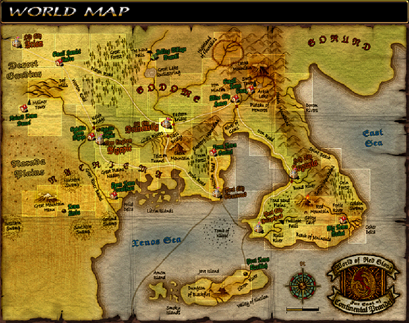
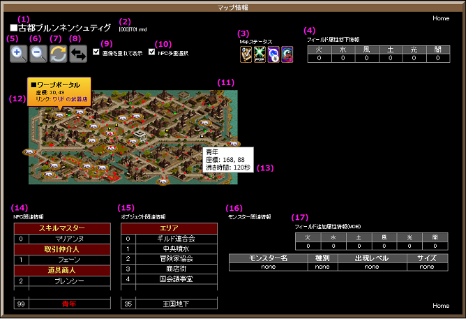

はじめに
■注意
Copyright c 2012 L&K Logic Korea Co., Ltd. All Rights Reserved.
 License to GameOn Co., Ltd.
License to GameOn Co., Ltd.
当サイトで利用している画像及びデータは、株式会社ゲームオンに帰属します。
許可無くご利用又は転用になられる事は出来ませんので、予めご了承下さい。
License to GameOn Co., Ltd. 当サイトで利用している画像及びデータは、株式会社ゲームオンに帰属します。
許可無くご利用又は転用になられる事は出来ませんので、予めご了承下さい。
■用語説明
ヘルプをご覧ください。
■更新履歴
2016/05/29 - DataBaseアップデート (Ver 0.0654)
2016/01/03 - DataBaseアップデート (Ver 0.0647)
2015/12/19 - DataBaseアップデート (Ver 0.0645)
2015/09/23 - DataBaseアップデート (Ver 0.0644)
2015/06/17 - DataBaseアップデート (Ver 0.0636)
2015/04/21 - DataBaseアップデート (Ver 0.0635)
2015/03/24 - DataBaseアップデート (Ver 0.0634)
2015/01/23 - DataBaseアップデート (Ver 0.0631)
2014/09/25 - DataBaseアップデート (Ver 0.0622)
2014/07/14 - DataBaseアップデート (Ver 0.0617)
2014/06/19 - DataBaseアップデート (Ver 0.0615)
2014/03/19 - DataBaseアップデート (Ver 0.0606)
2014/02/21 - DataBaseアップデート (Ver 0.0603)
2013/11/28 - DataBaseアップデート (Ver 0.0599)
2013/07/28 - DataBaseアップデート (Ver 0.0591)
2013/03/13 - DataBaseアップデート (Ver 0.0586)
2013/01/24 - DataBaseアップデート (Ver 0.0583)
2012/11/21 - DataBaseアップデート (Ver 0.0579)
2012/11/17 - 初回作成 (Ver 0.0577)
2016/01/03 - DataBaseアップデート (Ver 0.0647)
2015/12/19 - DataBaseアップデート (Ver 0.0645)
2015/09/23 - DataBaseアップデート (Ver 0.0644)
2015/06/17 - DataBaseアップデート (Ver 0.0636)
2015/04/21 - DataBaseアップデート (Ver 0.0635)
2015/03/24 - DataBaseアップデート (Ver 0.0634)
2015/01/23 - DataBaseアップデート (Ver 0.0631)
2014/09/25 - DataBaseアップデート (Ver 0.0622)
2014/07/14 - DataBaseアップデート (Ver 0.0617)
2014/06/19 - DataBaseアップデート (Ver 0.0615)
2014/03/19 - DataBaseアップデート (Ver 0.0606)
2014/02/21 - DataBaseアップデート (Ver 0.0603)
2013/11/28 - DataBaseアップデート (Ver 0.0599)
2013/07/28 - DataBaseアップデート (Ver 0.0591)
2013/03/13 - DataBaseアップデート (Ver 0.0586)
2013/01/24 - DataBaseアップデート (Ver 0.0583)
2012/11/21 - DataBaseアップデート (Ver 0.0579)
2012/11/17 - 初回作成 (Ver 0.0577)
マップ検索
■ここに検索したいマップ名の全部または一部を入れ、検索ボタンを押してください。
マップ情報
| ワールドマップ | マップ一覧 | 検索結果 | ヘルプ | ||
|---|---|---|---|---|---|
|

その他主要マップ情報
■マップ一覧■マップ検索検索結果はありません■利用方法

■説明
|
|||||